정보처리기사(구) (2012-08-26 기출문제)
1과목: 데이터 베이스
1. 물리적 저장 장치의 입장에서 본 데이터베이스 구조로서 실제로 데이터베이스에 저장될 레코드의 형식을 정의하고 저장 데이터 항목의 표현 방법, 내부 레코드의 물리적 순서 등을 나타내는 스키마는?
- Relational schema
- External schema
- Conceptual schema
- Internal schema
(정답률: 79%)

2. 개체-관계 모델에 대한 설명으로 옳지 않은 것은?
- 오너-멤버(Owner-Member) 관계라고도 한다.
- 개체 타입과 이들 간의 관계 타입을 기본 요소로 이용하여 현실 세계를 개념적으로 표현한다.
- E-R 다이어그램에서 개체 타입은 사각형으로 나타낸다.
- E-R 다이어그램에서 속성을 타원으로 나타낸다.
(정답률: 71%)
3. 다음 중 큐를 이용하는 작업에 해당하는 것은?
- 운영체제의 작업 스케줄링
- 부프로그램 호출시 복귀주소의 저장
- 컴파일러를 이용한 언어번역
- 재귀 프로그램의 순서제어
(정답률: 73%)
4. 다음과 같은 트랜잭션의 특징은?
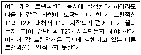
- Atomicity
- Consistency
- Isolation
- Durability
(정답률: 67%)
5. 시스템 카탈로그에 대한 설명으로 옳지 않은 것은?
- 사용자가 직접 시스템 카탈로그의 내용을 갱신하여 데이터베이스 무결성을 유지한다.
- 시스템 자신이 필요로 하는 스키마 및 여러 가지 객체에 관한 정보를 포함하고 있는 시스템 데이터베이스이다.
- 시스템 카탈로그에 저장되는 내용을 메타 데이터라고도 한다.
- 시스템 카탈로그는 DBMS가 스스로 생성하고 유지한다.
(정답률: 79%)
6. 다음 트리를 후위 순회(Post Traversal)할 경우 가장 먼저 탐색되는 것은?
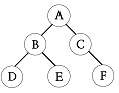
- A
- C
- D
- F
(정답률: 81%)
7. 다음 영문의 ( ) 안 내용으로 공통 적용될 수 있는 것은?
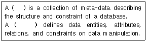
- Domain
- Schema
- Cardinality
- Degree
(정답률: 82%)
8. 선형 구조에 해당하는 구조를 모두 선택한 것은?
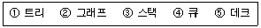
- ①, ②
- ③, ④, ⑤
- ②, ③, ④, ⑤
- ①, ③, ④, ⑤
(정답률: 76%)
9. 데이터 모델에 대한 다음 설명 중 ( )안에 공통으로 들어갈 내용으로 가장 타당한 것은?
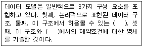
- 개체
- 연산
- 속성
- 도메인
(정답률: 61%)
10. 트랜잭션을 취소하는 이외의 조치를 명세할 필요가 있는 경우 메시지를 보내 어떤 값을 자동적으로 갱신하도록 프로시저를 기동시키는 방법은?
- 트리거(trigger)
- 무결성(integrity)
- 잠금(lock)
- 복귀(rollback)
(정답률: 74%)
11. 병행제어 기법 중 로킹(Locking) 기법에 대한 설명으로 옳지 않은 것은?
- 로킹은 데이터의 액세스를 상호배타적으로 수행한다.
- 데이터베이스, 파일은 로킹 단위가 될 수 없다.
- 로킹 단위가 커지면 데이터베이스 공유도가 저하된다.
- 로킹 단위가 작아지면 로킹 오버헤드가 증가한다.
(정답률: 77%)
12. 데이터베이스 설계 단계 중 물리적 설계에 해당하는 것은?
- 데이터 모형화와 사용자 뷰들을 통합한다.
- 사용자들의 요구사항을 확인하고 메타 데이터를 수집, 기록한다.
- 파일 조직 방법과 저장 방법, 그리고 파일 접근 방법 등을 선정한다.
- 사용자들의 요구사항을 입력으로 하여 응용프로그램의 골격인 스키마를 작성한다.
(정답률: 67%)
13. 데이터베이스의 특성으로 옳은 내용 모두를 선택한 것은?
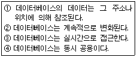
- ②, ③
- ②, ③, ④
- ①, ③, ④
- ①, ②, ③, ④
(정답률: 76%)
14. 데이터베이스에서 널(null) 값에 대한 설명으로 옳지 않은 것은?
- 아직 모르는 값을 의미한다.
- 아직 알려지지 않은 값을 의미한다.
- 공백이나 0(zero)과 같은 의미이다.
- 정보 부재를 나타내기 위해 사용한다.
(정답률: 75%)
15. 릴레이션의 특징으로 옳은 내용 모두를 나열한 것은?
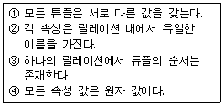
- ③, ④
- ②, ③, ④
- ①, ②, ④
- ①, ②, ③, ④
(정답률: 83%)
16. 다음 설명이 뜻하는 것은?
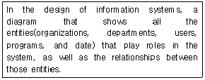
- E-R Diagram
- Flow Chart
- View
- Normalization
(정답률: 81%)
17. 순서가 A, B, C, D 로 정해진 입력 자료를 스택에 입력하였다가 출력할 때, 가능한 출력 순서의 결과가 아닌 것은?
- A, B, C, D
- C, D, B, A
- D, C, A, B
- B, C, D, A
(정답률: 74%)
18. 정규화 과정에서 발생하는 이상(Anomaly)에 관한 설명으로 옳지 않은 것은?
- 이상은 속성들 간에 존재하는 여러 종류의 종속관계를 하나의 릴레이션에 표현할 때 발생한다.
- 속성들 간의 종속 관계를 분석하여 여러 개의 릴레이션을 하나로 결합하여 이상을 해결한다.
- 삭제이상, 삽입이상, 갱신이상이 있다.
- 정규화는 이상을 제거하기 위해서 중복성 및 종속성을 배제시키는 방법으로 사용한다.
(정답률: 66%)
19. DBMS의 필수 기능 중 데이터베이스를 접근하여 데이터의 검색, 삽입, 삭제, 갱신 등의 연산 작업을 위한 사용자와 데이터베이스 사이의 인터페이스 수단을 제공하는 기능은?
- 정의기능
- 조작기능
- 제어기능
- 절차기능
(정답률: 71%)
20. 릴레이션에서 튜플을 유일하게 구별해 주는 속성 또는 속성들의 조합을 의미하는 키는?
- alternative key
- foreign key
- complex key
- candidate key
(정답률: 65%)
2과목: 전자 계산기 구조
21. 인터프리터(interpreter)를 사용하는 언어는?
- BASIC
- FORTRAN
- PASCAL
- Machine Code
(정답률: 52%)
22. 가상 기억체제에서 주소 공간이 1024K이고 기억공간은 32K라고 가정할 때 주기억장치의 주소 레지스터는 몇 비트로 구성되는가?
- 12
- 13
- 14
- 15
(정답률: 73%)
23. JK 플립플롭에서 J=1, K=1 일 때 Qn+1의 출력은?
- Qn
- 0(reset)
- 1(set)
- toggle
(정답률: 60%)
24. 명령어 파이프라인이 정상적인 동작에서 벗어나게 하는 일반적인 원인이 아닌 것은?
- 자원 충돌
- 유효주소의 계산
- 데이터 의존성
- 분기 곤란
(정답률: 52%)
25. 인터럽트 발생시 동작 순서로 옳은 것은?
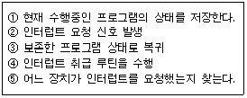
- ②→⑤→①→④→③
- ②→①→④→⑤→③
- ②→④→①→⑤→③
- ②→①→⑤→④→③
(정답률: 70%)
26. 입출력 제어 처리방식에 대한 설명으로 틀린 것은?
- 동작의 타이밍을 조정하는 방식은 프로그램에 의해서 프로세서가 조정하는 중앙처리장치 제어방식과 별도의 제어장치를 두어 조정하는 전용장치 제어 방식이 있다.
- 중앙처리장치 제어방식은 입출력 시점을 중앙처리장치 동작 타이밍에 맞추는 동기 방식과 입출력장치의 동작 타이밍에 맞추는 비동기 방식이 있다.
- 비동기 방식은 입출력 장치의 준비 상태를 중앙처리장치가 직접 검사하는 플래그 검사 방식과 입출력 장치에서 하드웨어적인 외부 신호를 발생시켜 중앙처리장치에 알리는 인터럽트 제어 방식이 있다.
- 중앙처리장치 제어방식의 경우 동기 방식과 비동기방식으로 나눌 수 있으며 인터럽트 제어방식은 동기방식에 해당된다.
(정답률: 52%)
27. 컴퓨터의 메이저 상태에 대한 설명으로 틀린 것은?
- 실행 상태가 끝나면 항상 패치 상태로만 간다.
- 간접 주소 명령어 형식인 경우 패치-간접-실행 순서로 진행되어야 한다.
- 실행 상태는 연산자 코드의 내용에 따라 연산을 수행하는 과정이다.
- 패치 상태에서는 기억 장치에서 인스트럭션을 읽어 중앙처리장치로 가져온다.
(정답률: 65%)
28. 다음은 ADD 명령어의 마이크로 오퍼레이션이다. t2시간에 가장 알맞은 동작은? (단, MAR : Memory Address Register, MBR : Memory Buffer Register, M(addr) : Memory, AC : 누산기)
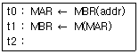
- AC ← MBR
- MBR ← AC
- M(MBR) ← MBR
- AC ← AC+MBR
(정답률: 60%)
29. 명령어를 구성하는 명령어 내 비트들이 할당에 영향을 주는 요소가 아닌 것은?
- 버스 개수
- 주소지정방식의 개수
- 주소 영역
- 연산코드
(정답률: 43%)
30. 양수 A와 B가 있다. 2의 보수 표현 방식을 사용하여 A-B를 수행하였을 때 최상위비트에서 캐리(carry)가 발생하였다. 이 결과로부터 A와 B에 대한 설명으로 가장 옳은 것은?
- 캐리가 발생한 것으로 보아 A는 B보다 작은 수이다.
- B-A를 수행하면 최상위비트에서 캐리가 발생하지 않는다.
- A+B를 수행하면 최상위비트에서 캐리가 발생하지 않는다.
- A-B의 결과에 캐리를 제거하고 1을 더해주면 올바른 결과를 얻을 수 있다.
(정답률: 35%)
31. 다음 중 사용자의 의도적인 인터럽트에 해당되는 것은?
- 스택 오버플로우
- 정전
- 시스템 호출
- 입출력 장치의 데이터 전송 요청
(정답률: 52%)
32. 인터럽트 서비스가 진행되면 다른 인터럽트를 배제시켜야 하는데 이 때 변경시켜야 하는 flag는 무엇이며, 어떻게 변경하여야 하는가?
- IEN ← 1
- IEN ← 0
- VAD ← 0
- VAD ← 1
(정답률: 57%)
33. 제어 주소 레지스터(control address register)에 적재될 수 없는 것은?
- MAR(memory address register)의 내용
- 사상(mapping)의 결과값
- 주소 필드(address field)
- 서브루틴 레지스터(subroutine register)의 내용들
(정답률: 30%)
34. 다음 불 함수를 간소화한 결과로 가장 옳은 것은? (단, d()는 무관 조건임)
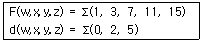
- F = w'z + yz
- F = x'y + w'z'
- F = w'x'y'z + yz
- F = w'x'z + yz
(정답률: 42%)
35. 반가산기에서 입력을 X, Y라 할 때 출력 부분의 캐리(Carry) 값은?
- XY
- X
- Y
- X +Y
(정답률: 61%)
36. 프로그램 카운터가 명령어의 주소부분과 더해져서 유효번지를 결정하는 주소지정방식은?
- 레지스터 주소지정방식
- 상대 주소지정방식
- 간접 주소지정방식
- 인덱스 주소지정방식
(정답률: 41%)
37. 클라우드 컴퓨팅(cloud computing)에 대한 설명으로 틀린 것은?
- 인터넷 기술을 활용하여 가상화된 IT자원을 서비스로 제공하는 컴퓨팅이다.
- 사용자는 IT자원을 필요한 만큼 빌려서 사용하고 필요한 경우 비용을 지불한다.
- 클라우드 컴퓨팅은 서비스 제공자가 장애로 인해 서비스를 제공하지 못하면 자료에 접근이 불가능하다.
- PaaS는 서버, 데스크탑 컴퓨터, 스토리지 같은 IT하드웨어 자원을 클라우드 서비스로 빌려 쓰는 형태를 말한다.
(정답률: 52%)
38. 일반적인 제어장치 모델에서 제어 장치로 입력되는 항목이 아닌 것은?
- CPU 내의 제어 신호들
- 클록
- 명령어 레지스터
- 플래그
(정답률: 29%)
39. 수직 마이크로명령어 방식의 명령어가 다음의 형식을 갖는다면 이 제어장치는 최대 몇 개의 제어 신호를 동시에 생성할 수 있는가?
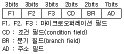
- 1개
- 2개
- 3개
- 4개
(정답률: 60%)
40. 고선명(HD) 비디오 데이터를 저장하기 위해 짧은 파장(4⑤나노미터)을 갖는 레이저를 사용하는 광 기록방식 저장매체는?
- Blu-ray 디스크
- CD
- DVD
- 플래시 메모리
(정답률: 75%)
3과목: 운영체제
41. 운영체제의 운영 기법 중 “Quantum"과 관계되는 것은?
- Real-time processing system
- Batch Processing system
- Time-sharing system
- Distributed processing system
(정답률: 47%)
42. 프로세스의 처리 시간보다 페이지 교체에 소요되는 시간이 더 많아지는 현상을 의미하는 것은?
- 스케줄링
- 스래싱
- 프리페이징
- 워킹 셋
(정답률: 74%)
43. 운영체제의 역할로 거리가 먼 것은?
- 시스템의 오류 검사 및 복구
- 자원의 스케줄링 기능 제공
- 원시 프로그램에 대한 토큰 생성
- 자원 보호 기능 제공
(정답률: 70%)
44. 디렉토리의 구조 중 중앙에 마스터 파일 디렉토리가 있고 하부에 사용자 파일 디렉토리가 있는 구조는?
- 단일 디렉토리 구조
- 2단계 디렉토리 구조
- 트리 디렉토리 구조
- 비순환 그래프 디렉토리 구조
(정답률: 62%)
45. 다음 설명에 해당하는 자원 보호 기법은?
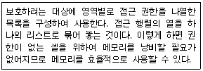
- 전역 테이블
- 접근 제어 리스트
- 권한 리스트
- 잠금-키(Lock-Key)
(정답률: 57%)
46. SCAN의 무한 대기 발생 가능성을 제거한 것으로 SCAN 보다 응답시간의 편차가 적고, SCAN과 같이 진행 방향상의 요청을 서비스하지만, 진행 중에 새로이 추가된 요청은 서비스하지 않고 다음 진행시에 서비스하는 디스크 스케줄링 기법은?
- N-step SCAN 스케줄링
- C-SCAN 스케줄링
- SSTF 스케줄링
- FCFS 스케줄링
(정답률: 48%)
47. 주기억장치 관리기법인 최악, 최초, 최적 적합기법을 각각 사용할 때, 각 방법에 대하여 10K의 프로그램이 할당되는 영역을 각 기법의 순서대로 옳게 나열한 것은? (단, 영역 A, B, C, D는 모두 비어 있다고 가정한다.)
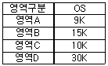
- 영역 D, 영역 A, 영역 A
- 영역 D, 영역 A, 영역 B
- 영역 B, 영역 A, 영역 A
- 영역 D, 영역 B, 영역 C
(정답률: 74%)
48. 분산 처리 운영체제에서 구체적인 시스템 환경을 사용자가 알 수 없도록 하며, 또한 사용자들로 하여금 이에 대한 정보가 없어도 원하는 작업을 수행할 수 있도록 지원하는 개념을 무엇이라고 하는가?
- Naming
- Transparency
- Encryption
- Locality
(정답률: 43%)
49. RR(Round Robin) 스케줄링에 대한 설명으로 옳지 않은 것은?
- Time slice를 크게 하면 입출력 위주의 작업이나 긴급을 요하는 작업에 신속히 반응하지 못한다.
- Time slice가 작을 경우 FCFS 스케줄링과 같아진다.
- Time Sharing System을 위해 고안된 방식이다.
- Time slice가 작을수록 문맥교환에 따른 오버헤드가 자주 발생한다.
(정답률: 56%)
50. UNIX의 파일 시스템 구조와 거리가 먼 것은?
- 사용자 블록
- I-node 블록
- 데이터 블록
- 슈퍼 블록
(정답률: 62%)
51. 다음 표와 같이 작업이 할당되었을 경우 내부단편화 및 외부단편화 크기는 얼마인가?
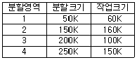
- 내부단편화 200 K, 외부 단편화 : 200 K
- 내부단편화 50 K, 외부 단편화 : 150 K
- 내부단편화 650 K, 외부 단편화 : 470 K
- 내부단편화 250 K, 외부 단편화 : 170 K
(정답률: 63%)
52. 하이퍼 큐브에서 하나의 프로세서에 연결되는 다른 프로세서의 수가 3개일 경우 필요한 총 프로세서의 수는?
- 4
- 8
- 16
- 32
(정답률: 76%)
53. 은행가 알고리즘(Banker's Algorithm)은 다음 교착상태 해결 방법 중 어떤 분야에 속하는가?
- 교착 상태의 예방
- 교착 상태의 회피
- 교착 상태의 발견
- 교착 상태의 회복
(정답률: 72%)
54. 4개의 프레임을 수용할 수 있는 주기억장치가 있으며, 초기에는 모두 비어 있다고 가정한다. 다음의 순서로 페이지 참조가 발생할 때, FIFO 페이지 교체 알고리즘을 사용할 경우 페이지 결함의 발생 횟수는?
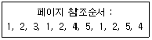
- 6회
- 7회
- 8회
- 9회
(정답률: 55%)
55. 파일 디스크립터의 내용으로 옳지 않은 것은?
- 오류 발생시 처리 방법
- 보조기억장치 정보
- 파일 구조
- 접근 제어 정보
(정답률: 60%)
56. 시스템 성능 평가요인으로 거리가 먼 것은?
- 신뢰도
- 처리 능력
- 응답 시간
- 프로그램 크기
(정답률: 74%)
57. UNIX에서 I-node는 한 파일이나 디렉토리에 관한 모든 정보를 포함하고 있는데, 이에 해당하지 않는 것은?
- 파일 소유자의 사용자 번호
- 파일이 만들어진 시간
- 데이터가 담긴 블록의 주소
- 파일이 가장 처음 변경된 시간 및 파일의 타입
(정답률: 66%)
58. 두 개의 프로세스 간 선행순서를 Pa < Pb로 표현할 경우 Pb가 먼저 실행된다고 가정한다면, P2 < P1, P4 < P2, P4 < P3의 선행관계가 있는 경우에 병행으로 실행될 수 있는 프로세스로 짝지어진 것은?
- P1, P3
- P1, P4
- P2, P4
- P3, P4
(정답률: 55%)
59. UNIX의 운영체제의 특징으로 적합하지 않은 것은?
- 트리 구조의 파일 시스템을 갖는다.
- Multi-Tasking은 지원하지만 Multi-User는 지원하지 않는다.
- 높은 이식성과 확장성이 있다.
- 대부분 C 언어로 작성되어 있다.
(정답률: 77%)
60. 분산 운영체제의 특징 중 다음 설명과 관계되는 것은?
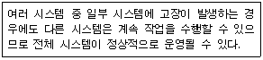
- Availability
- Expandability
- Resource Sharing
- Reliability
(정답률: 39%)
4과목: 소프트웨어 공학
61. 프로그램 설계도의 하나인 NS(Nassi-Schneiderman) Chart에 대한 설명으로 옳지 않은 것은?
- 논리의 기술에 중점을 두고 도형을 이용한 표현방법이다.
- 이해하기 쉽고 코드 변환이 용이하다.
- 화살표나 GOTO를 사용하여 이해하기 쉽다.
- 연속, 선택, 반복 등의 제어 논리 구조를 표현한다.
(정답률: 53%)
62. 프로젝트 추진 과정에서 예상되는 각종 돌발 상황을 미리 예상하고 이에 대한 적절한 대책을 수립하는 일련의 활동을 무엇이라고 하는가?
- 위험관리
- 일정관리
- 코드관리
- 모형관리
(정답률: 77%)
63. 객체 지향 기법에서 상위 클래스의 메소드와 속성을 하위클래스가 물려받는 것을 의미하는 것은?
- Abstraction
- Polymorphism
- Encapsulation
- Inheritance
(정답률: 63%)
64. 소프트웨어 품질보증을 위한 정형 기술 검토의 지침사항으로 옳지 않은 것은?
- 논쟁과 반박의 제한성
- 의제의 무제한성
- 제품검토의 집중성
- 참가인원의 제한성
(정답률: 69%)
65. Rumbaugh의 객체 모델링 기법(OMT)에서 사용하는 세 가지 모델링이 아닌 것은?
- 객체 모델링(object modeling)
- 정적 모델링(static modeling)
- 동적 모델링(dynamic modeling)
- 기능 모델링(functional modeling)
(정답률: 70%)
66. 다음 중 가장 높은 응집도(Cohesion)에 해당하는 것은?
- 순서적 응집도(Sequential Cohesion)
- 시간적 응집도(Temporal Cohesion)
- 대화적 응집도(Communicational Cohesion)
- 절차적 응집도(Procedural Cohesion)
(정답률: 41%)
67. 나선형(Spiral) 모형에 대한 설명으로 옳지 않은 것은?
- 여러 번의 개발 과정을 거쳐 점진적으로 완벽한 소프트웨어를 개발한다.
- 대규모 시스템의 소프트웨어 개발에 적합하다.
- 위험성 평가에 크게 의존하기 때문에 이를 발견하지 않으면 문제가 발생할 수 있다.
- 실제 개발될 소프트웨어에 대한 시제품을 만들어 최종 결과물을 예측하는 모형이다.
(정답률: 66%)
68. 소프트웨어 재공학은 어떤 유지보수 측면에서 소프트웨어 위기를 해결하려고 하는 방법인가?
- 수정 유지보수
- 적응 유지보수
- 완전화 유지보수
- 예방 유지보수
(정답률: 48%)
69. 제어흐름 그래프가 다음과 같을 때 McCabe의 cyclomatic수는 얼마인가?
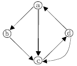
- 3
- 4
- 5
- 6
(정답률: 54%)
70. 소프트웨어 재공학(Reengineering)에 관한 설명으로 거리가 먼 것은?
- 현재의 시스템을 변경하거나 재구조화(Restructuring)하는 것이다.
- 재구조화는 재공학의 한 유형으로 사용자의 요구사항이나 기술적 설계의 변경 없이 프로그램을 개선하는 것이다.
- 재개발(Redevelopment)과 재공학은 동일한 의미이다.
- 사용자의 요구사항을 변경시키지 않고, 기술적 설계를 변경하여 프로그램을 개선하는 것도 재공학이다.
(정답률: 65%)
71. 소프트웨어 프로젝트 관리의 효과적 수행을 위한 3P에 해당하지 않는 것은?
- program
- people
- problem
- process
(정답률: 73%)
72. 소프트웨어의 재사용으로 인한 효과와 거리가 먼 것은?
- 개발기간의 단축
- 소프트웨어의 품질향상
- 개발 비용 감소
- 새로운 개발 방법 도입의 용이성
(정답률: 74%)
73. 객체지향 분석 방법론 중 Coad-Yourdon 방법에 해당하는 것은?
- E-R 다이어그램을 사용하여 객체의 행위를 데이터모델링 하는데 초점을 둔 방법이다.
- 객체, 동적, 기능 모델로 나누어 수행하는 방법이다.
- 미시적 개발 프로세스와 거시적 개발 프로세스를 모두 사용하는 방법이다.
- Use Case를 강조하여 사용하는 방법이다.
(정답률: 50%)
74. CASE(Computer-Aided Software Engineering)에 대한 설명으로 옳지 않은 것은?
- 소프트웨어 모듈의 재사용성을 봉쇄하여 개발비용을 절감할 수 있다.
- 소프트웨어 품질과 일관성을 효율적으로 관리할 수 있다.
- 소프트웨어 생명 주기의 모든 단계를 연결시켜 주고 자동화시켜 준다.
- 소프트웨어의 유지보수를 용이하게 수행할 수 있도록 해 준다.
(정답률: 69%)
75. 객체 지향 기법에서 객체가 메시지를 받아 실행해야 할 객체의 구체적인 연산을 정의한 것은?
- Entity
- Method
- Instance
- Class
(정답률: 70%)
76. 소프트웨어 품질목표 중 요구되는 기능을 수행하기 위해 필요한 자원의 소요 정도를 의미하는 것은?
- Efficiency
- Reliability
- Portability
- Usability
(정답률: 52%)
77. 소프트웨어의 위기현상과 거리가 먼 것은?
- 개발인력의 급증
- 유지보수의 어려움
- 개발기간의 지연 및 개발비용의 증가
- 신기술에 대한 교육과 훈련의 부족
(정답률: 75%)
78. 다음 검사의 기법 중 종류가 다른 하나는 무엇인가?
- 동치 분할 검사
- 원인 효과 그래프 검사
- 비교 검사
- 데이터 흐름 검사
(정답률: 59%)
79. 중앙 집중형 팀(책임프로그래머 팀)의 특징으로 거리가 먼 것은?
- 팀 리더의 개인적 능력이 가장 중요하다.
- 조직적으로 잘 구성된 중앙 집중식 구조이다.
- 프로젝트 팀의 목표 설정 및 의사결정 권한이 팀리더에게 주어진다.
- 팀 구성원 간의 의사교류를 활성화 시키므로 팀원의 참여도와 만족도를 증대시킨다.
(정답률: 73%)
80. DFD에 대한 설명으로 옳지 않은 것은?
- DFD는 자료 흐름과 기능을 자세히 표현하기 위하여 단계적으로 세분화된다.
- DFD는 시스템이나 프로그램간의 총체적인 데이터 흐름을 표시할 수 있으며, 기본적인 데이터요소와 그들 사이의 데이터흐름 형태로 기술된다.
- DFD로 데이터가 논리적 시스템들 간에 어떻게 흘러 다니는지는 알 수 있지만, 제어나 순서에 관한 정보는 알 수가 없다.
- DFD는 Data flow, Process, Data Store, Terminator의 4가지로 구성되며, 하향식 분석(Top-down Analysis)의 유용한 도구이다.
(정답률: 61%)
5과목: 데이터 통신
81. 데이터 전송제어 절차를 순서대로 옳게 나열한 것은?
- 회선접속→데이터링크 확립→정보 전송→회선절단→데이터링크 해제
- 데이터링크 확립→회선접속→정보 전송→데이터링크 해제→회선절단
- 회선접속→데이터링크 확립→정보 전송→데이터링크 해제→회선절단
- 데이터링크 확립→회선접속→정보 전송→회선절단→데이터링크 해제
(정답률: 71%)
82. 슬라이딩 윈도우(Sliding window)제어 방식에 대한 설명으로 옳지 않은 것은?
- X.25 패킷 레벨의 프로토콜에서도 사용되고 있으며, 수신 통지를 이용하여 송신 데이터의 양을 조절하는 방식이다.
- 송신측과 수신측 실체(entity)간에 호출설정 시 연속적으로 송신 가능한 데이터 단위의 최대치를 절충하는 방식이다.
- 수신측으로 부터의 수신통지에 의해 윈도우는 이동하고 새로운 데이터 단위의 송신이 가능하다.
- 하나의 데이터 블록을 전송한 후 응답이 올 때까지 다음 데이터 블록을 전송하지 않고 대기하는 방식이다.
(정답률: 65%)
83. 두 개 이상의 컴퓨터 사이에 데이터 전송을 할 수 있도록 미리 정보의 송수신 측에서 정해둔 통신 규약을 무엇이라 하는가?
- Protocol
- Link
- Terminal
- Interface
(정답률: 76%)
84. RTP(Real-time Transport Protocol) 헤더의 각 필드에 대한 설명으로 틀린 것은?
- Padding(P) 필드가 세팅되어 있는 경우는 그 패킷의 끝에 전송하려는 데이터 외에 추가적인 데이터들이 포함되어 있다.
- Marker(M) 필드는 패킷 스트림에서 프레임들 간의 경계에 존재하는 특별한 경우를 표시한다.
- Extension(X) 필드가 세팅되어 있는 경우는 RTP헤더 앞에 확장 헤더가 있음을 의미한다.
- Payload Type(PT) 필드는 데이터가 어떤 형식인지를 지정한다.
(정답률: 42%)
85. PSK(Phase Shift Keying) 방식이 적용되지 않은 변조 방식은?
- QDPSK
- QAM
- QVM
- DPSK
(정답률: 51%)
86. VAN의 주요 통신처리 기능 중 회선의 접속이나 제어 절차 등의 데이터를 전송할 때 다른 기종간의 통신이 가능 하도록 통신절차를 변환시키는 기능은?
- 프로토콜 변환 기능
- 미디어 변환 기능
- 포맷 변환 기능
- 데이터 교환 기능
(정답률: 57%)
87. CSMA/CD(Carrier Sensing Mulitiple Access/Collision Detection)에 대한 설명으로 틀린 것은?
- 전송 중에 충돌이 감지되면 패킷의 전송을 즉시 중단하고 충돌이 발생한 사실을 모든 스테이션들이 알 수 있도록 간단한 통보신호를 송신한다.
- 스테이션의 수가 많아지면 충돌이 많아져서 효율이 떨어진다.
- 충돌과 채널 경쟁을 위해 p-persistent 기법을 일반적으로 사용한다.
- 어느 한 기기에 고장이 발생하여도 다른 기기의 통신에 전혀 영향을 미치지 않는다.
(정답률: 36%)
88. X.25 프로토콜에 대한 설명으로 틀린 것은?
- 물리계층의 표준으로 X.21을 사용한다.
- 링크 계층의 표준은 LAPB을 사용한다.
- 패킷형 단말기를 패킷 교환망에 접속하기 위한 인터페이스 프로토콜이다.
- 물리 계층과 링크 계층인 2개의 계층으로 구성된다.
(정답률: 60%)
89. B-ISDN 프로토콜 참조 모델에 해당하지 않는 계층은?
- Data Link Layer
- Asynchronous Transfer Mode Layer
- Asynchronous Transfer Mode Adaptation Layer
- Physical Layer
(정답률: 26%)
90. 송신측에서 11012 의 데이터를 전송하였으나, 수신측이 받은 데이터는 10112로 나타났다. 이 때 두 데이터간의 해밍거리로 옳은 것은?
- 1
- 2
- 3
- 4
(정답률: 60%)
91. 이동 단말이나 PDA, 소형 무선 단말기 상에서 인터넷을 이용할 수 있도록 해주는 프로토콜의 총칭은?
- ASP
- WAP
- HTTP
- PPP
(정답률: 69%)
92. LAN의 통신 구조가 가능한 한 호환성을 유지해야 한다는 필요성에 의해 OSI 참조 모델의 데이터 링크 계층을 2개의 서브 계층으로 나누었는데 이에 해당하는 것은?
- 상위 서브 계층 : LLC, 하위 서브계층 : LAPB
- 상위 서브 계층 : HDLC, 하위 서브계층 : MAC
- 상위 서브 계층 : HDLC, 하위 서브계층 : LAPB
- 상위 서브 계층 : LLC, 하위 서브계층 : MAC
(정답률: 38%)
93. 다음이 설명하고 있는 인터넷 서비스는?
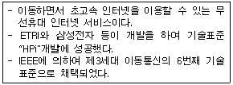
- Ubiquitous
- WiBro
- RFID
- VoIP
(정답률: 71%)
94. 데이터 링크 제어 프로토콜 중 ① 문자 위주 프로토콜과 ② 비트 위주 프로토콜을 옳게 나열한 것은?
- ① BSC, ② HDLC
- ① SDLC, ② HDLC
- ① PPP, ② BSC
- ① X.25 ② PPP
(정답률: 52%)
95. 패킷교환 방식에서 패킷을 작게 분할할 경우의 단점이 아닌 것은?
- 헤더가 증가된다.
- 노드지연시간이 증가된다.
- 패킷의 분할/조립시간이 늘어난다.
- 전체적인 전송지연 시간이 증가한다.
(정답률: 37%)
96. 데이터 링크를 제어하는 국(Station)으로서 오류를 제어하고 복구에 대한 책임을 가지며, 명령 프레임을 송신하고 응답 프레임을 수신하는 국(Station)은?
- 주국(Primary Station)
- 보조국(Secondary Station)
- 복합국(Combined Station)
- 이동국(Movement Station)
(정답률: 66%)
97. TCP/IP 프로토콜 중 인터넷 계층에 대응하는 OSI 참조 모델의 계층은?
- Physical Layer
- Presentation Layer
- Network Layer
- Session Layer
(정답률: 70%)
98. 다음 설명에 해당하는 OSI 7계층은?
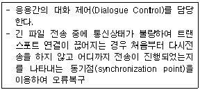
- 데이터 링크 계층
- 네트워크 계층
- 세션 계층
- 표현 계층
(정답률: 52%)
99. 가상회선 패킷교환 방식에서 모든 패킷이 전송되면 마지막으로 이미 확립된 접속을 끝내기 위해 이용되는 패킷은?
- Call Accept Packet
- Clear Request Packet
- Call identifier Packet
- Reset Packet
(정답률: 63%)
100. 아날로그 데이터를 디지털 신호로 변환하는 변조 방식은?
- PAM
- PDM
- PPM
- PCM
(정답률: 61%)